Redonner à la Base Sous-Marine de Bordeaux un réel statut culturel en résonance avec son histoire, et l’inscrire plus largement dans une démarche de valorisation culturelle du Bassin à flots. Cela passera par une recherche d’un nouveau nom, d’un nouveau logo, d’une identité visuelle qui lui est propre, par une réflexion sur son insertion dans son environnement proche par le biais d’une signalétique, par la conception d’une thématique d’un an d’expositions et d’évènements en rapport avec son histoire sur le modèle des théâtres ou opéras, et le lancement d’une saison culturelle avec une campagne de communication dont les invités d’honneur seront l’Allemagne et l’Italie.
Projet réalisé en binôme avec Justine Jacques.
Lorsque l’on visite la B.A.S.E nous sommes de suite interpellés par l’omniprésence de l’eau et de la lumière. La nouvelle B.A.S.E joue avec des effets de lumière et d’eau qui reflète cette atmosphère toute particulière : brut, étrange et sinistre.
Jouer avec l’environnement de la B.A.S.E permet de créer une interaction entre le lieux et les visiteurs. Les contrastes entre l’eau et le béton, la fragilité et la robustesse, l’immatériel et le matériel... Créés une interaction intéressante entre l’ancien et le renouveau.
Afin de continuer la « collection » de cuves ovoïdes réalisées en partenariat avec l’ECV Bordeaux, la demande du château Larrivet Haut-Brion était d'habiller l'une de leur cuve ovoïde autour d'une thématique, celle de 2018 : les Oenofolies "Ce n’est pas simplement une dégustation ; c’est une expérience unique en petit comité qui conjugue à chaque édition rencontre.
 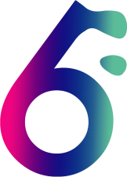
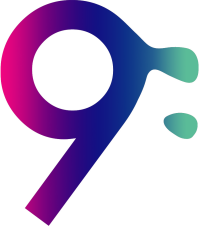
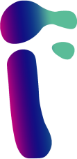
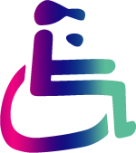
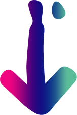
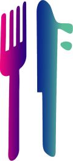
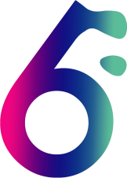
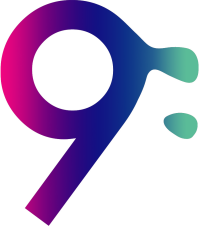
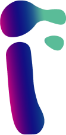
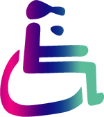
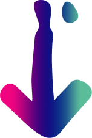
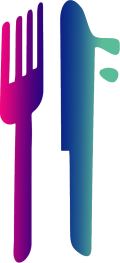
C’est la signature graphique du Château Larrivet Haut-Brion, avec une collection de timbres créés pour tous les événements ou actualités du château.
Afin de continuer la « collection » de cuves ovoïdes réalisées en partenariat avec l’ECV Bordeaux, la demande du château Larrivet Haut-Brion était d'habiller l'une de leur cuve ovoïde autour d'une thématique, celle de 2018 : les Oenofolies "Ce n’est pas simplement une dégustation ; c’est une expérience unique en petit comité qui conjugue à chaque édition rencontre.